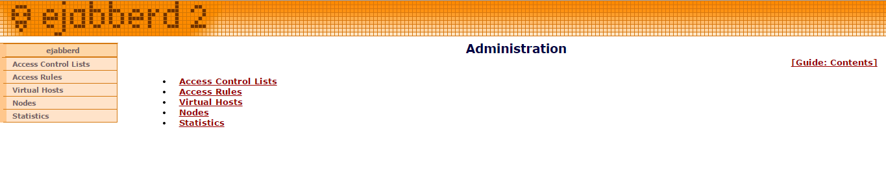

Setting up Jabber XMPP Server on CentOS and Fedora, XMPP
Difficulty: 2
Time: 30 Minutes
This article explains installation and configuration of ejabber on CentOS and Fedora.
Jabber is a simple, mature and powerful messaging protocol which was developed for real-time messaging between two or more people,s based on the text typed. Jabber is used by enterprises for internal communication, developers for improving programming skills, hosting provider for highly available and stable communication services, individual for chatting.
Note: You will need access to sudo privileges to complete all steps.
Run the following command to download ejabber:
wget http://www.process-one.net/downloads/downloads-action.php?file=/ejabberd/14.12/ejabberd-14.12-linux-x86_64-installer.run -o ejabberd-14.12-linux-x86_64-installer.run
Change file name
Change permission
Execute Installer
If you want to keep default directory press enter, you can also specify another path as per your convenience.
Type FQDN or public IP or localhost or any internal IP from which we can access it.
In the above prompt you can choose any username, that will become your administrator.
Tip: Choose different username to make it more secure.
After choosing username, next it will prompt for password. Choose password very carefully and go ahead.
After submitting password, installer will prompt for cluster. Press 'N' as we don't require it now.
To continue, press Y. The installer will start the installation process and it will take some time to finish it.
Next it will prompt for view readme
Press N if you don't want to read it and press Y if you want to read.
Now our ejabber protocol is ready to be used. Use the following command to start ejabber protocol:
Now ejabber message service is started. Let us verify it by using the following command:
If you find output as below, congratulations you have successfully installed jabber instant messaging service.
Now open your browser, type http://your_ip:5280/ and hit Enter. It will prompt for authentication credentials, enter those credentials which you have entered during installation time. After successfully logging in, it will show the screen as below
